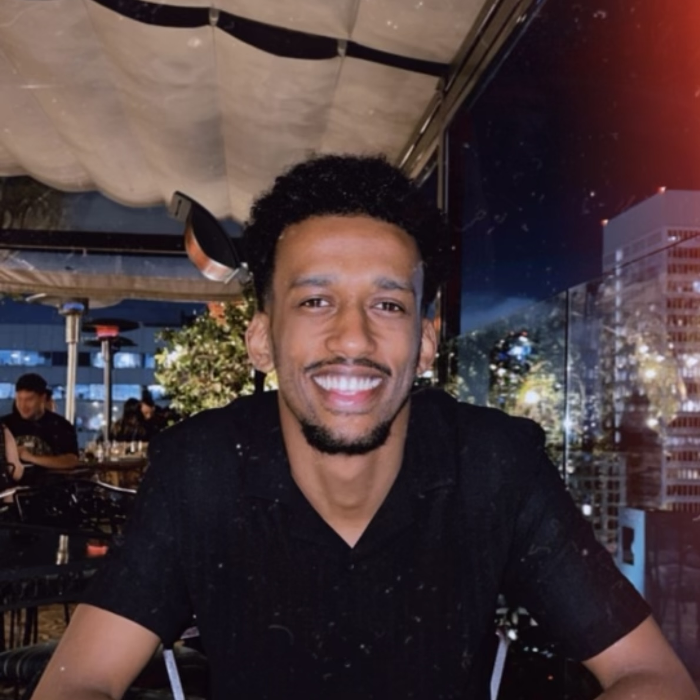

Founder turned product leader. I've built two companies from zero, leading product, marketing, and operations across both.

I grew up between worlds. Ethiopian roots. American hustle. Early lesson: technology should serve people who aren't already winning.
That belief led me to co-found Kabba Transport in Addis Ababa. I spent weeks riding informal minibuses as a passenger before writing a single requirement. You can't build for users you've never been.
Before that, I built Radium Media from nothing. $30M in sales. No outside funding. The insight was simple: build brands backward. Start with the audience, not the product. Most founders build what they want to sell. I built what people already wanted to buy.
Both companies taught me the same thing in different languages: the gap between a good idea and a product people actually use is almost never about the idea. It's about the decisions. What you prioritize, who you listen to, and what you choose not to build. I want to bring that instinct to a team that's past zero, with real users and a real problem worth getting right.
Outside work, I'm drawn to the same kinds of problems: cities, transit systems, how infrastructure shapes behavior long before anyone thinks to measure it. I read obsessively. Behavioral economics, urbanism, AI. Right now AI has most of my attention. Not because of the hype, but because the gap between what the technology can do and what's actually being built with it is still enormous. Same instinct that made me ride the minibus before I wrote the spec.
Recognized for innovation in urban mobility and transportation technology in East Africa.
Management Leadership for Tomorrow (MLT) — business case studies and leadership modules focused on product strategy and cross-functional collaboration.
B.S. Computer Science & Cybersecurity
Metro State University · Dean's List
Two companies, two industries, two continents. Here's what I built, the decisions behind it, and what I'd do differently.
Kabba Transport is a shared mass transit platform I co-founded and led product for in Addis Ababa — built from first principles to solve a real infrastructure gap, not to copy a model from somewhere else. Not a ride-hailing app. Not a taxi with a logo change. A fundamentally different product category: fixed-route, subscription-based commuter infrastructure for a city of 5 million daily commuters with no reliable transit system built for them.
Before writing a single requirement, I spent weeks riding the informal minibuses as a commuter — not a researcher with a clipboard, but someone living the problem. I was doing jobs-to-be-done research before I had a name for it. The insight that changed everything: the job isn't "get a ride." It's "start work on time, every day, without the anxiety of not knowing whether you'll get there." That distinction changes every product decision that follows.
Ride-hailing companies had arrived. They solved reliability — but priced themselves out of the working professional's daily reality. Built for the middle class, not for the commuter taking the same route every day. Meanwhile, the informal minibus system had affordability but no structure, no predictability, no trust. No one had built the thing in the middle: mass transit infrastructure that was affordable, predictable, and designed to scale.
The informal system had product-market fit for affordability. Ride-hailing had PMF for the upper segment. The mass transit category had no validated PMF at all — that was the opening. Kabba was designed as structured commuting infrastructure: fixed routes, subscription models, predictable pricing. Built like transit, not like a gig economy workaround. Emerging markets don't need ride-hailing at scale. They need the kind of system working professionals in developed markets take for granted — and nobody had built it.
I owned the full product surface — from first-principles discovery to specs engineering could execute without return trips for clarification. Three concurrent workstreams, competing priorities, one roadmap. Here's what that looked like in practice:
Radium Media was a creator commerce company I founded and ran — built on a single insight: creator audiences are among the most loyal, high-intent buyers in e-commerce, and almost no one was building brands specifically for them. I didn't treat creators as a distribution channel. I built brands backward, starting with the audience and using the creator as proof that the market already existed.
Most companies treated creator audiences as an advertising channel. I saw it as a product brief — an audience telling you exactly who they are and what they want, if you're willing to listen. A mid-tier creator with 200,000 engaged followers has something most brands spend millions trying to manufacture: genuine trust. Their audience doesn't just consume their content. They buy what the creator recommends and instantly reject anything that feels inauthentic.
The model was disciplined from the start. For each partnership, I built detailed audience personas before touching product — purchasing behavior, identity signals, content categories that drove the highest trust. Most importantly, I mapped the jobs-to-be-done: what was the audience actually hiring this creator to do for them? What emotional job did the content fulfill? Then I built brands designed to fulfill that same promise. Not brands looking for an audience. Audiences finally getting a brand built for them.
Mid-tier creators were the right bet — not because they were cheaper than mega-influencers, but because their audiences had the engagement depth that mass-reach partnerships can't replicate. I validated PMF with each audience before every launch, A/B testing messaging and positioning before committing a dollar to scale. The creator-audience relationship was the product. My job was to make sure the brand deserved to be inside it.
Open to my next adventure. If you're building something interesting and need someone who has done this before, let's talk.